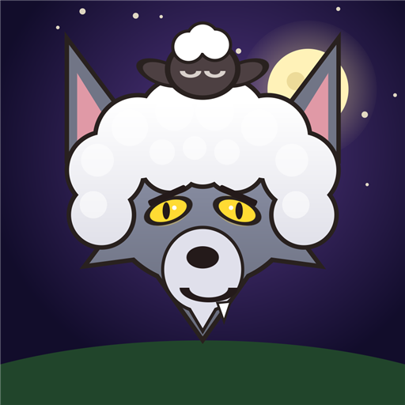

Oyunlar
Arkadaşlarla oynanan, küçük ve eğlenceli oyunlar yapıyorum.

Kuzu Postu
Sürüye koyun postuna bürünmüş kurtlar sızdı! İşleri bitir, kurdu bul ve köy meclisinde sürüden kov. 3–10 kişilik çevrimiçi parti oyunu.
Arkadaşlarla oynanan, küçük ve eğlenceli oyunlar yapıyorum.

Sürüye koyun postuna bürünmüş kurtlar sızdı! İşleri bitir, kurdu bul ve köy meclisinde sürüden kov. 3–10 kişilik çevrimiçi parti oyunu.